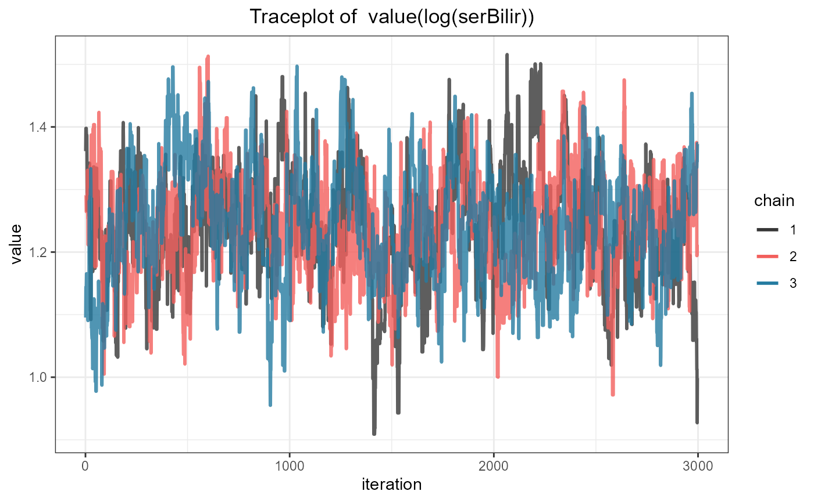
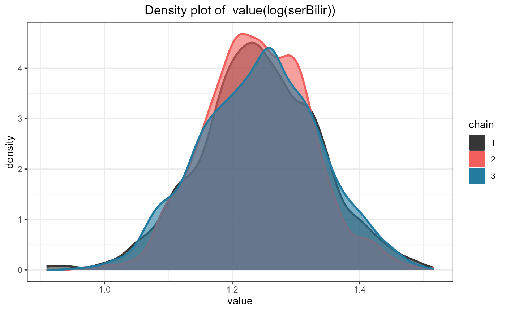

Univariate and Multivariate Joint Models
Dimitris Rizopoulos
2026-09-16
Source:vignettes/JMbayes2.Rmd
JMbayes2.RmdFitting Joint Models with JMbayes2
Univariate
The function that fits joint models in JMbayes2 is
called jm(). It has three required arguments,
Surv_object a Cox model fitted by coxph() or
an Accelerated Failure time model fitted by survreg(),
Mixed_objects a single or a list of mixed models fitted
either by the lme() or mixed_model()
functions, and time_var a character string indicating the
name of the time variable in the specification of the mixed-effects
models. We will illustrate the basic use of the package in the PBC
dataset. We start by fitting a Cox model for the composite event
transplantation or death, including sex as a baseline covariate:
pbc2.id$status2 <- as.numeric(pbc2.id$status != 'alive')
CoxFit <- coxph(Surv(years, status2) ~ sex, data = pbc2.id)We aim to assess the strength of the association between the risk of
the composite event and the serum bilirubin levels collected during
follow-up. We will describe the patient-specific profiles over time for
this biomarker using a linear mixed model, with fixed effects, time,
sex, and their interaction, and as random effects, random intercepts,
and random slopes. The syntax to fit this model with lme()
is:
The joint model that links the survival and longitudinal submodels is
fitted with the following call to the jm() function:
jointFit1 <- jm(CoxFit, fm1, time_var = "year")
summary(jointFit1)
#>
#> Call:
#> JMbayes2::jm(Surv_object = CoxFit, Mixed_objects = fm1, time_var = "year")
#>
#> Data Descriptives:
#> Number of groups: 312 Number of events: 169 (54.2%)
#> Number of observations:
#> log(serBilir): 1945
#>
#> DIC WAIC LPML
#> marginal 4360.329 5330.306 -3120.145
#> conditional 3536.960 3356.698 -1914.927
#>
#> Random-effects covariance matrix:
#>
#> StdDev Corr
#> (Intr) 0.9993 (Intr)
#> year 0.1834 0.4041
#>
#> Survival outcome:
#> Mean StDev 2.5% 97.5% P Rhat
#> sexfemale -0.1640 0.2702 -0.6738 0.4076 0.526 1.0022
#> value(log(serBilir)) 1.2418 0.0894 1.0698 1.4198 0.000 1.0089
#>
#> Longitudinal outcome: log(serBilir) (family = gaussian, link = identity)
#> Mean StDev 2.5% 97.5% P Rhat
#> (Intercept) 0.7223 0.1729 0.3841 1.0599 0.0000 1.0000
#> year 0.2662 0.0380 0.1918 0.3409 0.0000 1.0013
#> sexfemale -0.2629 0.1843 -0.6249 0.1071 0.1553 1.0000
#> year:sexfemale -0.0878 0.0400 -0.1663 -0.0076 0.0307 1.0015
#> sigma 0.3467 0.0067 0.3338 0.3601 0.0000 1.0233
#>
#> MCMC summary:
#> chains: 3
#> iterations per chain: 3500
#> burn-in per chain: 500
#> thinning: 1
#> time: 14 secThe output of the summary() method provides some
descriptive statistics of the sample at hand, followed by some fit
statistics based on the marginal (random effects are integrated out
using the Laplace approximation) and conditional on the random effects
log-likelihood functions, followed by the estimated variance-covariance
matrix for the random effects, followed by the estimates for the
survival submodel, followed by the estimates for the longitudinal
submodel(s), and finally some information for the MCMC fitting
algorithm.
By default, jm() adds the subject-specific linear
predictor of the mixed model as a time-varying covariate in the survival
relative risk model. In the output, this is named as
value(log(serBilir)) to denote that, by default, the
current value functional form is used. That is, we assume that the
instantaneous risk of an event at a specific time t is associated with the value of the linear
predictor of the longitudinal outcome at the same time point t.
Standard MCMC diagnostics are available to evaluate convergence. For
example, the traceplot for the association coefficient
value(log(serBilir)) is produced with the following
syntax:
ggtraceplot(jointFit1, "alphas")
and the density plot with the call:
ggdensityplot(jointFit1, "alphas")
Multivariate
To fit a joint model with multiple longitudinal outcomes, we provide
a list of mixed models as the second argument of jm(). In
the following example, we extend the joint model we fitted above by
including the prothrombin time and the log odds of the presence or
absence of ascites as time-varying covariates in the relative risk model
for the composite event. Ascites is a dichotomous outcome, and
therefore, we fit a mixed-effects logistic regression model for it using
the mixed_model() function from the
GLMMadaptive package. The use of || in the
random argument of mixed_model() specifies
that the random intercepts and random slopes are assumed uncorrelated.
In addition, the argument which_independent can be used to
determine which longitudinal outcomes are to be assumed independent;
here, as an illustration, we specify that the first (i.e., serum
bilirubin) and second (i.e., prothrombin time) longitudinal outcomes are
independent. To assume that all longitudinal outcomes are independent,
we can use jm(..., which_independent = "all"). Because this
joint model is more complex, we increase the number of MCMC iterations,
the number of burn-in iterations, and the thinning per chain using the
corresponding control arguments:
fm2 <- lme(prothrombin ~ year * sex, data = pbc2, random = ~ year | id)
fm3 <- mixed_model(ascites ~ year + sex, data = pbc2,
random = ~ year || id, family = binomial())
jointFit2 <- jm(CoxFit, list(fm1, fm2, fm3), time_var = "year",
which_independent = cbind(1, 2),
n_iter = 12000L, n_burnin = 2000L, n_thin = 5L)
summary(jointFit2)
#>
#> Call:
#> JMbayes2::jm(Surv_object = CoxFit, Mixed_objects = list(fm1,
#> fm2, fm3), time_var = "year", which_independent = cbind(1,
#> 2), n_iter = 12000L, n_burnin = 2000L, n_thin = 5L)
#>
#> Data Descriptives:
#> Number of groups: 312 Number of events: 169 (54.2%)
#> Number of observations:
#> log(serBilir): 1945
#> prothrombin: 1945
#> ascites: 1885
#>
#> DIC WAIC LPML
#> marginal 11670.79 13918.64 -7850.173
#> conditional 12890.30 12618.74 -6829.707
#>
#> Random-effects covariance matrix:
#>
#> StdDev Corr
#> (Intr) 1.0011 (Intr) year (Intr) year (Intr)
#> year 0.1870 0.4485
#> (Intr) 0.7606
#> year 0.3249 -0.0094
#> (Intr) 2.7283 0.5081 0.4677 0.3281 -0.0193
#> year 0.4710 0.4095 0.6679 -0.0562 0.3308
#>
#> Survival outcome:
#> Mean StDev 2.5% 97.5% P Rhat
#> sexfemale -0.6516 0.3628 -1.3646 0.0573 0.0707 1.0227
#> value(log(serBilir)) 0.5053 0.1806 0.0918 0.8220 0.0187 1.0645
#> value(prothrombin) -0.0491 0.1255 -0.3163 0.1812 0.7197 1.0313
#> value(ascites) 0.6012 0.1590 0.3630 0.9985 0.0000 1.0970
#>
#> Longitudinal outcome: log(serBilir) (family = gaussian, link = identity)
#> Mean StDev 2.5% 97.5% P Rhat
#> (Intercept) 0.6988 0.1664 0.3729 1.0254 0.000 1.0018
#> year 0.2692 0.0353 0.2026 0.3402 0.000 1.0145
#> sexfemale -0.2404 0.1761 -0.5866 0.0994 0.174 1.0026
#> year:sexfemale -0.0798 0.0365 -0.1508 -0.0093 0.025 1.0056
#> sigma 0.3481 0.0067 0.3350 0.3616 0.000 1.0001
#>
#> Longitudinal outcome: prothrombin (family = gaussian, link = identity)
#> Mean StDev 2.5% 97.5% P Rhat
#> (Intercept) 10.9835 0.1697 10.6495 11.3137 0.0000 1.0004
#> year 0.2108 0.0765 0.0644 0.3622 0.0073 1.0089
#> sexfemale -0.4402 0.1793 -0.7969 -0.0878 0.0133 1.0002
#> year:sexfemale 0.0449 0.0801 -0.1120 0.1990 0.5587 1.0094
#> sigma 1.0574 0.0201 1.0180 1.0980 0.0000 1.0011
#>
#> Longitudinal outcome: ascites (family = binomial, link = logit)
#> Mean StDev 2.5% 97.5% P Rhat
#> (Intercept) -4.5182 0.7170 -5.9852 -3.1921 0.0000 1.0372
#> year 0.6412 0.0758 0.4919 0.7903 0.0000 1.1858
#> sexfemale -0.5461 0.6665 -1.8009 0.8123 0.4063 1.0067
#>
#> MCMC summary:
#> chains: 3
#> iterations per chain: 12000
#> burn-in per chain: 2000
#> thinning: 5
#> time: 1.2 minThe survival submodel output now contains the estimated coefficients
for value(prothrombin) and value(ascites), as
well as parameter estimates for all three longitudinal submodels.
Functional forms
As mentioned above, the default call to jm() includes
the subject-specific linear predictors of the mixed-effects models as
time-varying covariates in the relative risk model. However, this is
just one of the many possibilities for linking longitudinal and survival
outcomes. The argument functional_forms of
jm() provides additional options. Based on previous
experience, two extra functional forms are provided: the time-varying
slope and the time-varying normalized area/cumulative effect.
The time-varying slope is the first-order derivative of the
subject-specific linear predictor of the mixed-effect model with respect
to the (follow-up) time variable. The time-varying normalized
area/cumulative effect is the integral of the subject-specific linear
predictor of the mixed-effect model from zero to the current (follow-up)
time t divided by t. The integral is the area under the
subject-specific longitudinal profile; by dividing the integral by t, we obtain the average of the
subject-specific longitudinal profile over the corresponding period
(0, t).
To illustrate how the functional_forms argument can be
used to specify these functional forms, we update the joint model
jointFit2 by including the time-varying slope of log serum
bilirubin instead of the value and also the interaction of this slope
with sex and for prothrombin we include the normalized cumulative
effect. For ascites, we keep the current value functional form. The
corresponding syntax to fit this model is:
fForms <- list(
"log(serBilir)" = ~ slope(log(serBilir)) + slope(log(serBilir)):sex,
"prothrombin" = ~ JMbayes2::area(prothrombin)
)
jointFit3 <- update(jointFit2, functional_forms = fForms)
summary(jointFit3)
#>
#> Call:
#> JMbayes2::jm(Surv_object = CoxFit, Mixed_objects = list(fm1,
#> fm2, fm3), time_var = "year", functional_forms = fForms,
#> which_independent = cbind(1, 2), n_iter = 12000L, n_burnin = 2000L, ...
#>
#> Data Descriptives:
#> Number of groups: 312 Number of events: 169 (54.2%)
#> Number of observations:
#> log(serBilir): 1945
#> prothrombin: 1945
#> ascites: 1885
#>
#> DIC WAIC LPML
#> marginal 11677.49 12664.98 -7145.285
#> conditional 12732.64 12433.87 -6714.379
#>
#> Random-effects covariance matrix:
#>
#> StdDev Corr
#> (Intr) 0.9970 (Intr) year (Intr) year (Intr)
#> year 0.1854 0.4539
#> (Intr) 0.7517
#> year 0.3235 -0.0116
#> (Intr) 2.6165 0.5582 0.4572 0.3352 -0.0696
#> year 0.4440 0.4287 0.6814 -0.0643 0.3569
#>
#> Survival outcome:
#> Mean StDev 2.5% 97.5% P Rhat
#> sexfemale 0.2374 0.9255 -1.4933 2.0764 0.8293 1.0626
#> slope(log(serBilir)) 4.2736 2.3254 -0.1641 9.0609 0.0587 1.1095
#> slope(log(serBilir)):sexfemale -3.8266 2.7833 -9.5928 1.2753 0.1470 1.1291
#> JMbayes2::area(prothrombin) -0.3192 0.2554 -0.8104 0.1607 0.2173 1.3097
#> value(ascites) 0.9859 0.2102 0.6436 1.4232 0.0000 1.4229
#>
#> Longitudinal outcome: log(serBilir) (family = gaussian, link = identity)
#> Mean StDev 2.5% 97.5% P Rhat
#> (Intercept) 0.6675 0.1656 0.3440 0.9860 0.0003 1.0001
#> year 0.2640 0.0341 0.1995 0.3332 0.0000 1.0117
#> sexfemale -0.2060 0.1750 -0.5449 0.1379 0.2407 1.0001
#> year:sexfemale -0.0725 0.0347 -0.1420 -0.0054 0.0370 1.0103
#> sigma 0.3483 0.0067 0.3353 0.3615 0.0000 1.0027
#>
#> Longitudinal outcome: prothrombin (family = gaussian, link = identity)
#> Mean StDev 2.5% 97.5% P Rhat
#> (Intercept) 10.9914 0.1705 10.6690 11.3229 0.0000 1.0031
#> year 0.1913 0.0764 0.0395 0.3452 0.0097 1.0066
#> sexfemale -0.4496 0.1798 -0.8035 -0.1019 0.0093 1.0028
#> year:sexfemale 0.0622 0.0799 -0.0947 0.2196 0.4357 1.0094
#> sigma 1.0585 0.0204 1.0198 1.1001 0.0000 1.0100
#>
#> Longitudinal outcome: ascites (family = binomial, link = logit)
#> Mean StDev 2.5% 97.5% P Rhat
#> (Intercept) -4.4702 0.6505 -5.7837 -3.2464 0.0000 1.0520
#> year 0.6401 0.0704 0.5004 0.7827 0.0000 1.1036
#> sexfemale -0.4340 0.6365 -1.6702 0.8437 0.4843 1.0087
#>
#> MCMC summary:
#> chains: 3
#> iterations per chain: 12000
#> burn-in per chain: 2000
#> thinning: 5
#> time: 1.3 minAs seen above, the functional_forms argument is a named
list with elements corresponding to the longitudinal outcomes. If a
longitudinal outcome is not specified in this list, then the default
value functional form is used for that outcome. Each element of the list
should be a one-sided R formula in which the functions
value(), slope(), and area() can
be used. Interaction terms between the functional forms and other
(baseline) covariates are also allowed.
Penalized Coefficients using Shrinkage Priors
When multiple longitudinal outcomes are considered with possibly
different functional forms per outcome, we require to fit a relative
risk model containing several terms. Moreover, it is often of scientific
interest to select which terms/functional forms per longitudinal outcome
are more strongly associated with the risk of the event of interest. To
facilitate this selection, jm() allows penalizing the
regression coefficients using shrinkage priors. As an example, we refit
jointFit3 by assuming a Horseshoe prior for the
alphas coefficients (i.e., the coefficients of the
longitudinal outcomes in the relative risk model):
jointFit4 <- update(jointFit3, priors = list("penalty_alphas" = "horseshoe"))
cbind("un-penalized" = unlist(coef(jointFit3)),
"penalized" = unlist(coef(jointFit4)))
#> un-penalized penalized
#> gammas.Mean 0.2374497 -0.5502744
#> association.slope(log(serBilir)) 4.2736269 2.1417693
#> association.slope(log(serBilir)):sexfemale -3.8265851 -0.8025063
#> association.JMbayes2::area(prothrombin) -0.3192189 -0.1688748
#> association.value(ascites) 0.9858689 0.8419852Apart from the Horseshoe prior, the ridge prior is also provided.